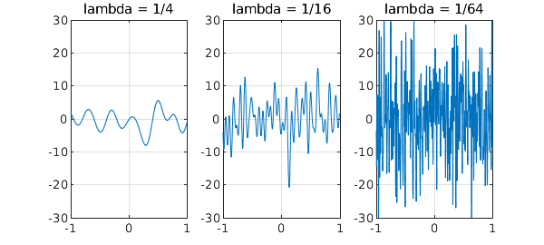

Stochastic analysis is built on the idea of white noise, which is formalized by the notion of a Wiener process, that is, mathematical Brownian motion. However, white noise comes with a paradox. In principle it contains equal amounts of energy at all wave numbers, and since the set of wave numbers is infinite, this means infinite energy and infinite amplitude.
For example, here are trajectories of three random functions in Chebfun with parameters $\lambda = 1/4$, $1/16$, and $1/64$. These functions have wave numbers cutting off at about $2\pi/\lambda$, and so as $\lambda$ shrinks, the amplitude increases. In the limit $\lambda \to 0$ the amplitude would be infinite.
rng(1) for k = 1:3 subplot(1,3,k) lambda = 1/4^k; plot(randnfun(lambda,'norm'),'linewidth',5-k) set(gca,'fontsize',24) title(['lambda = 1/' int2str(4^k)],'fontsize',24) grid on, ylim([-30 30]) end

How do we resolve this paradox? In Chebfun, we resolve it by cutting off the wave numbers at $O(2\pi/\lambda)$, so that a random function is smooth and of finite amplitude. In stochastic analysis, it is resolved by never dealing with white noise directly, but only with its integral. Thanks to sign cancellations, the integral of white noise, known as a Brownian path, is continuous (with probability 1). It is not smooth, however, and indeed is everywhere nondifferentiable (with probability 1).
In Einstein's annus mirabilis 1905, he published four epochal papers in the Annalen der Physik. Curiously, two of these papers, on very different subjects, have a link with the white noise paradox. (I don't know if Einstein noticed the connection.) One was about physical Brownian motion, which Einstein studied long before its current mathematical idealization had been established [1]. In the physical context, the paradox is avoided because in actual molecular dynamics there is a lower limit to the relevant space scales and thus an upper limit to the wave numbers. (So physics's view of white noise, you might say, is a bit like Chebfun's.)
The other paper of Einstein's with a link to the white noise paradox is the one for which he won the Nobel Prize, on quantization of light and the photoelectric effect [2]. As the famous (and not quite correct) story goes, 19th century physics was troubled by the paradox of the "ultraviolet catastrophe". The equipartition theorem of statistical mechanics predicted that a cavity should support electromagnetic waves of all frequencies, each with an equal amount of energy. So at each instant a cavity should radiate infinite energy! Planck's quantization resolved this difficulty by positing that in fact, higher frequencies have less energy in them, and Einstein's paper carried this analysis deeper.
Kragh has pointed out in a fascinating article that although this familiar story is correct as to the physics, it is incorrect as to the history [3]. (I am grateful to Adam Caulton of Balliol College for pointing me to this article.) Although the ultraviolet catastrophe was indeed implicit in 19th century physics, it seems this was not the motivation for Planck's work, and it was not published until 1905 by Rayleigh and Jeans. Planck introduced his quantum for other reasons! The name "ultraviolet catastrophe" came from Ehrenfest in 1911. The observation that quantization of light averts the catastrophe may in fact be due to Einstein.
References:
[1] A. Einstein, Über einen die Erzeugung und Verwandlung des Lichtes betreffenden heuristischen Gesichtspunkt, Annalen der Physik 17 (1905), 132-148.
[2] A. Einstein, Über die von der molekularkinetischen Theorie der Wärme geforderte Bewegung von in ruhenden Flüssigkeiten suspendierten Teilchen, Annalen der Physik 17 (1905), 549-560.
[3] H. Kragh, Max Planck: the reluctant revolutionary, Physics World 13 (2000), 31-35.